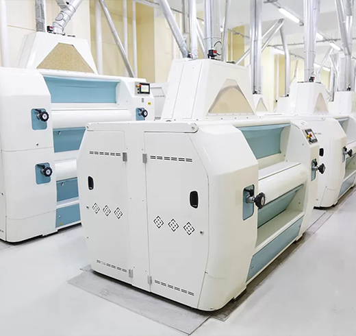
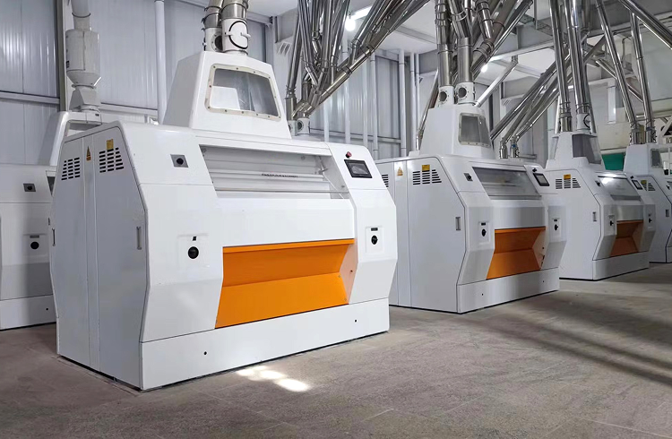

Değirmen Makineleri ve Un Üretim Tesisleri
Un Üretiminde Yüksek Verimlilik ve Üstün Kalite
Un üretiminde verimlilik ve kaliteyi arttırmak için en gelişmiş teknolojiye sahip değirmen makinelerini sunuyoruz.
Yılların tecrübesi ve uzman ekibimizle un tüm ihtiyaçlarına uygun çözümler geliştiriyoruz.
Talep ettiğiniz ürünleri en verimli şekilde ve en önemlisi doğru firmalar ile çözüme kavuşturmak için çalışıyoruz.
Doğru üretici ve tedarikçilerle güçlü bir iletişim kurarak, ihtiyaçlarınıza en uygun ürün ve makineleri en verimli şekilde tedarik ediyoruz. Müşteri odaklı yaklaşımımızla, esnek ve tamamen ihtiyaca özel çözümler sunuyor, iş süreçlerinizi en verimli hale getiriyoruz. Ayrıca, 7/24 ulaşılabilirlik garantisiyle PMPEXİM olarak her an yanınızdayız.


Size Teklif Verebilmemiz İçin Gerekli Olan Bilgiler
- Kaç Ton / Saat’lik un üreten tesis isteniyor ?
- Yapılacak olan bine dikey mi olacak yatay mı ?
- Dikey bine ilk yatırım maliyeti olarak daha fazla maliyetli çıkar. Fakat daha sonra taşıma sistemi yer çekimi ile ilerleyeceği için uzun vadede daha kullanışlı ve verimli olacaktır.
- Yapılacak olan tesiste irmik isteniyor mu ?
- Kaç tip un isteniyor ?
- Un paketleme isteniyor mu ? İsteniyor ise kaçar kg’luk paketler isteniyor ?
- Kepek çuvallama olacak mı ?
- Buğday temizlendikten sonra kirli buğday ne yapılacak ?
- Un ve Kepek siloları kaç günlük ya da kaç saate yeterli kapasitede olacak ?
- Kontrol sistemi PLC sistem mi yoksa manuel sistem mi isteniyor ?